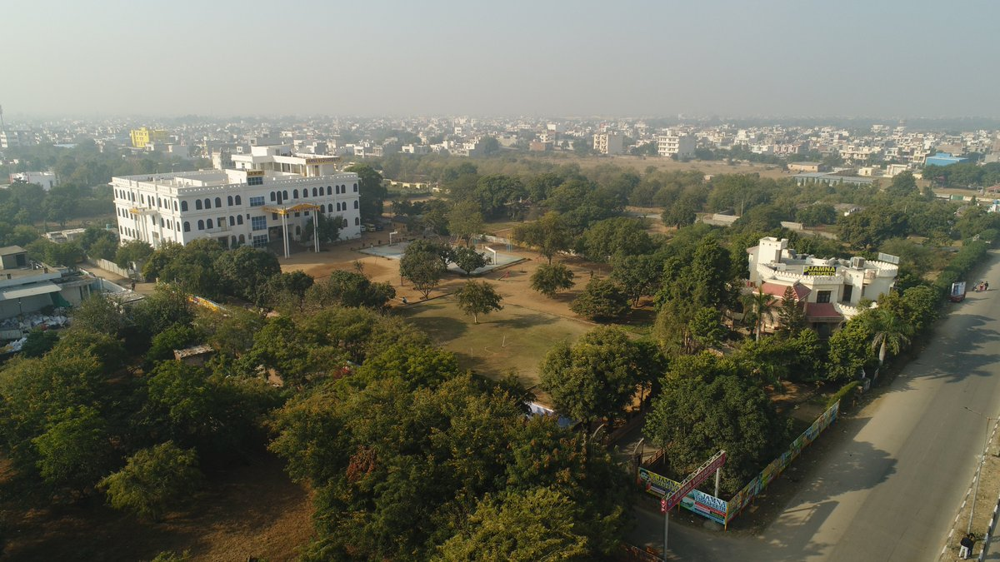
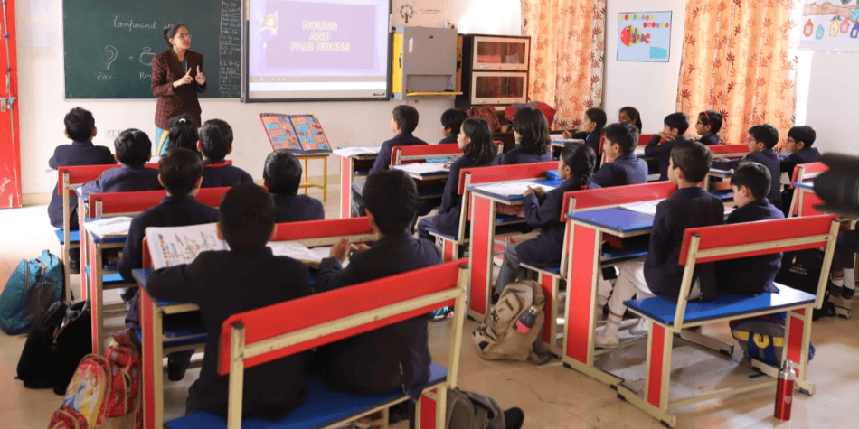
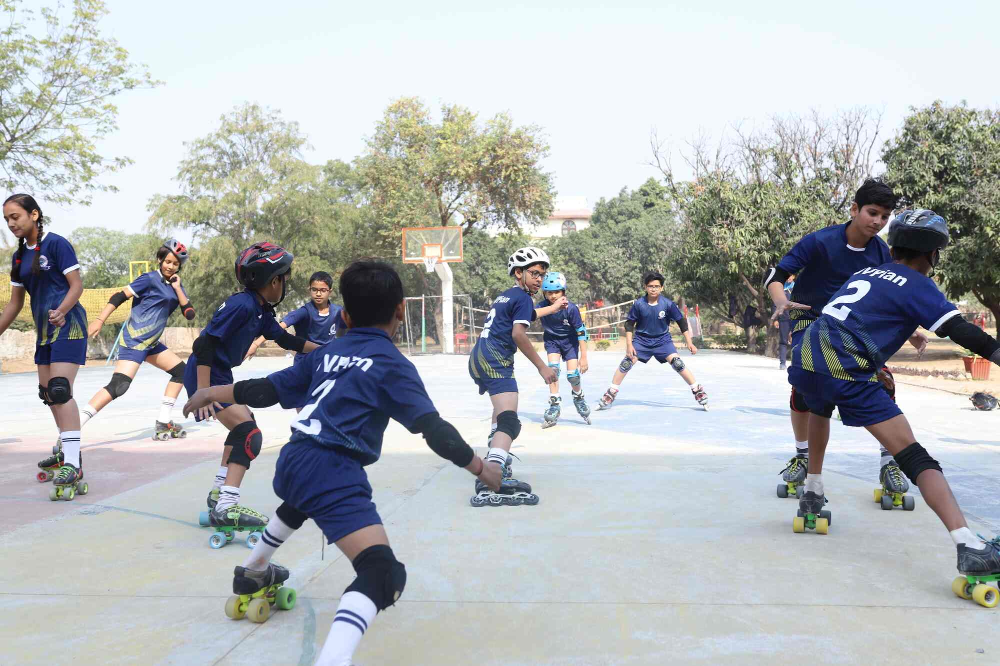
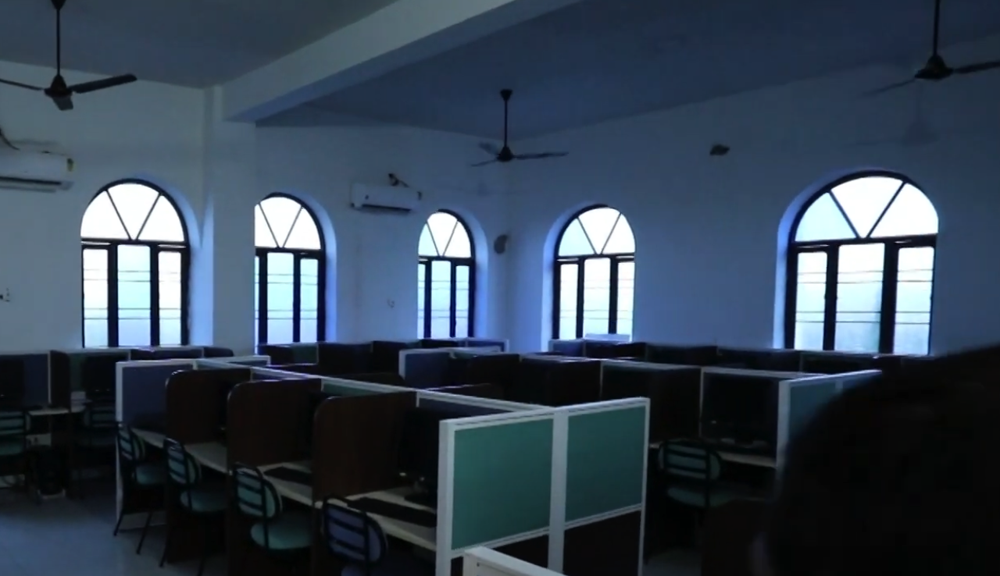
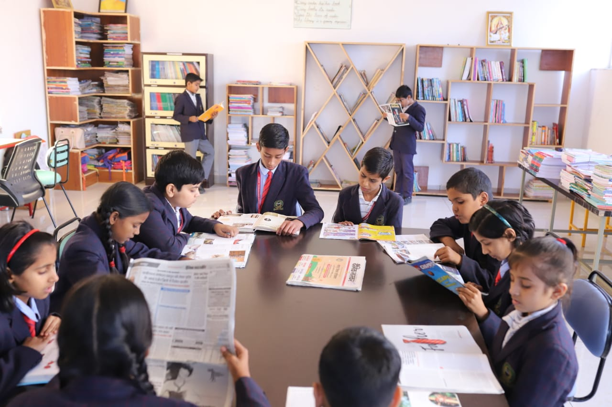

Our School Campus
We have a spacious and well-equipped school campus designed for our students,where we conduct a wide range of activities, including sports, practical sessions, and creative workshops. Our campus features modern facilities such as sports fields, science labs, art studios, and open spaces that encourage exploration and learning. We believe that engaging in diverse activities not only enhances academic learning but also fosters teamwork, leadership skills, and personal growth. By providing opportunities for hands-on experiences and interactive learning, we aim to create an environment where students can develop a deeper understanding of concepts while having fun and building lasting friendships.

Our Classrooms
At JVP, our classrooms cater to diverse learning needs We have well-maintained basic classrooms that provide a comfortable and focused environment for traditional education. Additionally, some classrooms are equipped with smart boards, enhancing interactive learning through technology. These smart boards facilitate engaging presentations and collaborative activities, making lessons more dynamic and accessible.

Our Playground
At JVP, we believe in the importance of physical activity and outdoor play for the holistic development of our students. Our playground is designed to provide a safe and engaging environment where students can enjoy a variety of games and sports.

Our Computer lab
At Jamna Vidyapeeth, we believe that technology plays a vital role in modern education. Our well-equipped computer lab is designed to enhance the learning experience of our students and provide them with essential digital skills. With access to the latest software and hardware, students can engage in hands-on learning that promotes creativity and innovation. Our dedicated instructors guide students through various programs, ensuring they gain a solid understanding of computer applications. At JVP, we aim to prepare our students for the challenges of the 21st century. By incorporating technology into our curriculum, we empower our students to become proficient digital citizens. Our lab also fosters collaboration, allowing students to work together on projects and share ideas.
